CS3203 · GROUP 21 · PID 5
FreshLens
AI-Powered Freshness Monitoring System
for Small-Scale Retailers
Test Plan Report
Unit · API · database security · service integration
Playwright browser UI · Grafana k6 performance
FreshLens is an AI-powered freshness monitoring system for small-scale grocery retailers. This report records the test plan, execution results and screenshot evidence for CS3203, Group 21, PID 5, on 27 September 2026. The system combines a FastAPI service, PostgreSQL tenant isolation, Redis/Celery background processing, a Next.js administration interface and an Expo mobile application.
The evaluation targets the highest-impact risks: cross-tenant data access, duplicate or excessive stock deductions, failed scan orchestration, incorrect confidence-gate logic and unusable authentication screens. Functional correctness, browser behaviour and performance are reported separately.
| Test group | Type | Recorded outcome | Evidence |
|---|---|---|---|
| API suite | Unit and API/component functional | 68 passed; 1 dependency warning | E07; detail E01–E02 |
| ML suite | Unit and worker/data utility | 28 passed | E08; detail E04 |
| Web utilities | Frontend unit | 8 passed | E05 |
| Mobile utilities | Frontend unit | 9 passed | E06 |
| PostgreSQL security | Database integration/security | 2 SQL suites passed | E03 |
| Live service integration | HTTP, database and queue integration | 14 passed in 2.49 s | E10 |
| Playwright UI | Browser functional smoke | 8 passed in 12.79 s | E20–E21; JUnit/log |
| Static analysis | ESLint and TypeScript | 3 commands passed | E09 |
| k6 smoke / load | Local API performance | PASS / PASS | E11–E16 |
| k6 spike | Local API performance | FAIL: read and write p95 | E17–E19 |
There are 135 passing automated test cases across the API, ML, web, mobile, integration and Playwright suites. SQL suites, static checks and k6 assertions are reported separately. The selected API-01, API-02 and ML-01 screenshots show subsets of the full suites and are not added again to the total.
Evaluation outcome: the recorded functional cases pass. The short 25-user spike fails the proposed local latency criteria despite zero HTTP failures and correct stock balances. Performance acceptance is therefore incomplete. These results support the tested local scope; they do not establish production readiness or complete requirements coverage.
The terminal captures identify branch test-plan-report and base commit 2d9e4b1. The later integration and performance executions include an uncommitted sales concurrency fix and newly added test files. The commit shown in their headers is a base revision, not a claim that the working tree was clean. Playwright was run separately during report completion against the same local checkout. All dates and screenshot filenames use Sri Lanka time (UTC+05:30), unless an artifact explicitly records UTC.
| Target | Tested behaviour | Main risk addressed |
|---|---|---|
| FastAPI scans and sales | Validation, roles, asynchronous acceptance, sale replay and rollback | Invalid requests or duplicate stock deduction |
| PostgreSQL | RLS, restricted login, tenant-scoped reads/writes, transaction integrity | Data leakage and inconsistent inventory |
| Redis/Celery pipeline | Real scan delivery, worker completion and result persistence | Scans accepted but never completed |
| ML decision utilities | Label mapping, confidence gates, dataset and batch utilities | Incorrect handling of uncertain predictions |
| Web and mobile utilities | Claims, aggregate mapping and session storage | Incorrect role/tenant handling or corrupt sessions |
| Next.js browser UI | Login controls, validation, redirects and narrow layout | Inaccessible or broken authentication flow |
| Local API under load | Read/write latency, HTTP failures and post-run stock | Degradation during concurrent activity |
| Item | Configuration used for this evidence |
|---|---|
| Host | Linux development laptop; shared with other local applications |
| Python / test runner | Python 3.12.3; pytest 8.4.1; .venv-test-report |
| JavaScript | Node.js 22.23.2; node:test through tsx |
| Live integration stack | One Uvicorn worker; PostgreSQL 16.14-alpine; Redis 7.4-alpine; Celery |
| Authentication fixture | Temporary local RS256/JWKS issuer; normal application signature/claim verification |
| Scan implementation | Local file storage; asynchronous Celery worker using stub-v0 classification |
| Performance | Grafana k6 2.3.0; isolated loopback HTTP target |
| Browser UI | Playwright Python 1.63.0; headless Google Chrome 153.0.8010.47; Next.js 16.2.12 dev server |
| Browser viewports | Desktop 1440 × 900; narrow viewport 390 × 844 |
Tests use disposable local data and synthetic tenant identities. Live stack scripts require Docker and the Python dependencies; browser checks require the web app, configured public Supabase settings and Chrome. The browser checks use no authenticated account. Invalid form submissions are rejected before authentication, and no real password is entered.
| Layer | Technique and tools | Execution represented here |
|---|---|---|
| Unit | Controlled inputs and assertions; pytest or node:test/tsx |
API business logic, ML utilities, web/mobile utilities |
| API/component | FastAPI TestClient with substituted database, storage or queue dependencies | Request/response and orchestration checks |
| Database integration | Real PostgreSQL migrations, RLS and restricted-role SQL | Two security suites with ON_ERROR_STOP=1 |
| Service integration | Live HTTP plus real PostgreSQL, Redis and Celery | 14 local cases; local issuer and stub classifier |
| Browser UI | Playwright interacts with the real rendered Next.js app | Eight local browser smoke cases |
| Performance | k6 virtual users and explicit pass/fail thresholds | Smoke, load and spike profiles |
| Static analysis | ESLint and TypeScript compilation checks | Web lint; web and mobile typechecks |
The existing GitHub Actions workflow runs repository structure, API, ML, web, mobile and RLS jobs on pull requests and pushes to main. The new live integration, k6 and Playwright evidence was collected locally; this report does not claim that those suites already run in CI or that these artifacts were uploaded by CI.
Positive cases exercise valid requests and expected state changes. Negative cases exercise missing/malformed identity, unauthorized roles, invalid uploads, cross-tenant access, overselling and conflicting idempotency payloads. Boundary cases exercise confidence cutoffs and depleted stock. Concurrency cases overlap transactions against the real database. Browser cases assert visible state and navigation after user actions.
Functional tests pass when every assertion succeeds and the command exits successfully. SQL execution stops on the first error. Performance profiles must satisfy all configured thresholds; passing HTTP-status checks alone is insufficient. Static analysis is supporting quality evidence, not a runtime functional test.
Requirement traceability is provided by the cases and evidence references below. Test counts represent executed examples, not the percentage of requirements verified. No line/branch coverage instrument was enabled for these runs. Frontend utility tests cannot establish React rendering, and ML unit tests with controlled predictions cannot establish model accuracy.
This submission does not measure trained YOLO accuracy, real inference latency, phone camera capture, offline behaviour, iOS/Android device compatibility, full authenticated dashboard journeys, accessibility conformance, hosted Supabase availability, R2 behaviour or disaster recovery. Storage in the live scan test is local disk. Short laptop runs are not production capacity or endurance benchmarks. No user acceptance study or code-coverage percentage is claimed.
Purpose: validate scan inputs and asynchronous processing. Setup: FastAPI TestClient with controlled roles and substituted dependencies. Procedure: submit valid/invalid images and quantities; exercise retrieval, listing, publication failure and Redis keys. Expected: valid creation returns HTTP 202 without inline inference; invalid inputs and forbidden roles are rejected; enqueue failures mark the scan failed; keys carry a tenant namespace. Result: 10 passed (E01), included in the API total. Camera and cloud storage are excluded; INT-01 covers the live pipeline.
Purpose: prevent overselling and duplicate deductions. Setup: controlled inventory and a fake database. Procedure: create valid/excessive sales, mismatch product and batch, omit the key, repeat identical payloads and reuse a key with changed data. Expected: valid sales deduct stock and emit applicable alerts; identical replay returns the existing sale without another deduction; changed payloads conflict; forbidden roles are rejected. Result: 9 passed (E02), included in the API total. The live contract returns HTTP 201 for original/identical replay and 409 for changed-payload reuse. INT-01 verifies concurrency.
Purpose: prevent access outside the tenant context. Setup: disposable PostgreSQL 16, migrations, synthetic tenants and restricted login freshlens_api_local. Procedure: run rls_isolation.sql and runtime_role.sql, including restricted login over TCP. Expected: tenant boundaries and auth-hook rules hold; runtime privileges exclude superuser and BYPASSRLS while permitting authorized operations. Result: both suites passed, exit 0 (E03). Coverage is limited to the exercised policies and operations.
Purpose: prevent uncertain classification results from being accepted. Setup: controlled fake model outputs in test_identity.py. Procedure: map supported labels, reject unknown labels, accept identity 0.91 and freshness 0.84, reject identity 0.70 under the 0.75 cutoff, and reject freshness 0.49 under the 0.50 cutoff. Expected: low identity confidence leaves identity/freshness labels absent and skips the freshness model; low freshness confidence raises the expected error. Result: 5 passed (E04), included in the 28-case ML total. Actual image quality, checkpoints and model accuracy were not evaluated by these cases.
Purpose: validate aggregate data transformations and trusted authentication claims. Procedure: construct admin API responses and claim objects, then assert percentages, snapshot mapping, role/tenant validation and treatment of user metadata. Expected: valid identities map correctly; malformed or incompatible role/tenant combinations are rejected; user metadata is presentation-only. Result: 8 passed using node:test through tsx (E05). The historical terminal label “UI-01” refers to utility unit tests; it is not evidence that browser charts rendered. Playwright browser coverage is UI-02 in Section 7.
Mobile tests exercise UTF-8 chunk-size limits, session round trips, atomic replacement/removal of storage chunks and vendor claim validation. Result: 9 passed (E06). The complete API and ML suites passed 68 and 28 cases, respectively (E07–E08). Web lint, web typecheck and mobile typecheck all exited successfully (E09). The API suite reported one Starlette/AnyIO deprecation warning; it did not fail the suite.
tests/system/test_live_api.py exercises the running application over HTTP, with a real PostgreSQL database, Redis and Celery worker. Services bind locally and are discarded after the run. JWT verification uses the normal application implementation with a local RS256/JWKS fixture. The API and worker use the restricted database role. No FastAPI dependency overrides are used in this suite.
The scan test sends a multipart upload, verifies queue/worker completion and persisted inventory, and checks that another tenant cannot retrieve the scan. The classifier is stub-v0; this establishes integration of the services while excluding trained-model behaviour.
| Area | Assertions exercised |
|---|---|
| Authentication and roles | Missing, malformed and tampered token rejection; vendor/admin endpoint permissions |
| Database boundary | Restricted connection privileges; tenant catalogue isolation over HTTP |
| Sales and replay | Persistence, identical replay and changed-payload conflict without extra deduction |
| Atomicity | Cross-tenant write rejection; multi-item oversell rolls back the complete sale |
| Concurrency | Two sales cannot oversell the last item; concurrent identical requests return one sale for initial stock 1 and 10; conflicting payloads return 409 |
| Key scope and alerts | The same key remains independent between tenants; low-stock alerts persist and can be read |
| Scan workflow | Upload → local storage → Redis → Celery → database completion; tenant isolation |
Result: 14 passed in 2.49 seconds, exit 0 (E10). The total includes two parameterized stock cases for concurrent identical retries.
Concurrent identical sale requests initially reproduced a failure: one request returned HTTP 500 after a database uniqueness conflict left its transaction aborted. The sales service now takes a PostgreSQL transaction advisory lock scoped to tenant and idempotency key before checking for an existing sale and validating stock.
The regression test deliberately overlaps the requests using a real database row lock, then verifies both responses identify the same sale and stock is deducted once. All 14 integration cases and the existing 68 API cases passed after the change. The source fix remains local and uncommitted in this evidence revision.
Each profile starts a new isolated local stack. Each of two tenants has one product, one batch containing 1,000,000 stock units, 20 completed scan records and five alerts. Every iteration reads products, batches, alerts and scans. Every fifth iteration creates a sale and immediately repeats it with the same idempotency key. Each virtual user pauses 250 ms per iteration.
Checks assert successful statuses, nonempty lists, tenant ownership and identical sale IDs on replay. A post-run database assertion verifies remaining inventory equals starting stock minus persisted sales. k6 uses sequential requests within each virtual user; VU count is not a fixed request-rate target. The one-VU smoke profile exercises tenant A's HTTP workload; tenant B remains a seeded control for its post-run stock check. The load and spike profiles exercise both tenants.
The following local acceptance criteria were chosen before execution: read-request p95 below 500 ms; sale/replay p95 below 1,000 ms; HTTP failure rate below 1%; and 100% functional checks passing. p95 is the 95th percentile of measured request duration. These criteria are test targets, not a contractual production SLA. k6 treats a failed threshold as a failed run [R4].
| ID / profile | Virtual-user schedule | Configured duration |
|---|---|---|
| PERF-01 / smoke | 1 VU | 10 s |
| PERF-02 / load | 10 s to 5 VUs; 10 s to 10; hold 30 s; ramp to 0 in 10 s | 60 s |
| PERF-03 / spike | 10 s to 2; 2 s to 25; hold 15 s; 2 s to 2; hold 10 s; 5 s to 0 | 44 s |
| Metric | Smoke | Load | Spike |
|---|---|---|---|
| HTTP requests | 84 | 1,754 | 1,032 |
| Completed iterations | 19 | 397 | 227 |
| Functional checks passed | 240 / 240 | 5,013 / 5,013 | 2,910 / 2,910 |
| Read p95 (ms) | 77.50 | 308.80 | 668.52 |
| Write/replay p95 (ms) | 110.91 | 499.62 | 1,192.94 |
| HTTP failure rate | 0% | 0% | 0% |
| Post-run stock checks | Both tenants pass | Both tenants pass | Both tenants pass |
| Process exit code | 0 | 0 | 99 |
| Overall profile verdict | PASS | PASS | FAIL — latency |
Values are rounded from the retained k6 JSON summaries. Terminal formatting truncates some displayed values, including load write p95 at 499.61 ms. Evidence E11–E19 records setup, thresholds and completion for each run.
The spike exceeds the read p95 target by 168.52 ms and write p95 target by 192.94 ms. All functional assertions still pass and no HTTP requests fail, but the performance verdict remains FAIL. The observed throughput and latency describe this particular short local workload; they do not identify a production user limit or prove the cause of the degradation. Bottleneck profiling, optimization and another measured run remain follow-up work.
The screenshots show an “unknown field gracefulStop” warning. k6 ignored the attempted top-level setting and used its default 30-second graceful-stop period, as printed in the scenario output. All iterations completed with zero interruptions. The warning is preserved in the evidence; the report records the effective configuration rather than the ignored setting.
The API, database, load generator and other applications shared the laptop. There was one API worker and a small synthetic dataset. No CPU, memory or database-pool profiling was recorded. The k6 workload does not upload scan images, run real ML inference, measure browser rendering or establish soak/endurance behaviour. The aggregate spike summary also does not independently prove how quickly latency recovered after the peak.
Playwright was used for UI testing of the real Next.js administration sign-in interface. Python Playwright drove headless Chrome against the local development server; pytest recorded the assertions and JUnit results. Each case used a new browser context. No authenticated user or mocked API response was needed for this smoke scope.
| Browser case | Expected behaviour | Result |
|---|---|---|
| Login page and controls | Correct title/heading; labelled email/password controls; enabled submit; password masked | PASS |
| Empty submission | Both field errors visible; aria-invalid=true; remains on login |
PASS |
| Malformed email | Email error appears before authentication; password is not marked invalid | PASS |
| Password visibility | Show/hide changes input type and preserves the entered synthetic value | PASS |
| Protected dashboard | Unauthenticated navigation redirects to login | PASS |
| Session-expired route | Redirects to login with the session-expiry alert | PASS |
| Narrow layout | At 390 × 844, submit remains reachable and inside viewport width; no horizontal overflow | PASS |
| Access-denied navigation | Required-role heading renders; return link opens login | PASS |
Recorded result: 8 passed in 12.79 seconds. Test source: tests/ui/test_web_ui.py. Evidence E20 shows the desktop validation state after an empty submission; E21 shows the narrow layout. Screenshots are supplementary visual evidence; the result log and JUnit XML record the actual assertions.
The browser was Chrome 153.0.8010.47, controlled by Playwright 1.63.0, at desktop 1440 × 900 and narrow 390 × 844 viewports. The run does not establish authenticated dashboard/chart behaviour, full accessibility compliance, cross-browser compatibility or native Expo device behaviour. The narrow viewport is not an iOS/Android device test. The entered example values are synthetic and contain no real credentials.
Playwright / pytest execution, 27 September 2026
Collected: 8 browser cases
Result: 8 passed in 12.79s
JUnit: docs/test-report-assets/playwright-results.xml
Log: docs/test-report-assets/playwright-results.log
The appendix contains 19 distinct user-captured terminal screenshots, followed by two genuine Playwright browser screenshots. Repeated attachments have been included once. Original PNG content is preserved; images are only scaled to fit report pages. Each figure has an evidence ID, source filename, scope and result caption. docs/test-report-assets/manifest.json records SHA-256 hashes for all 21 images.
Original terminal results are retained under runs/test-evidence/terminal-20260927-185722/. Integration/k6 evidence is under runs/test-evidence/terminal-20260927-212122/, with per-profile summaries, JUnit where applicable, compressed raw metric samples and command logs/exit codes. Samples are timing/status metrics, not a full HTTP header/body capture. Playwright artifacts are retained under runs/test-evidence/playwright-ui/; its log and JUnit are also copied beside the report assets. Temporary local tokens and database connection configuration are excluded from the submission bundle.
| Finding | Status and required follow-up |
|---|---|
| Concurrent identical sales could return HTTP 500 | Fixed locally with a tenant/key advisory lock; integration and API regression tests pass |
| Spike read and write p95 exceed local limits | Open performance finding; profile resource/connection contention, optimize and rerun |
| k6 graceful-stop configuration warning | Recorded run used the default 30 s; correct configuration placement before future runs |
| Starlette/AnyIO deprecation warning | Non-failing dependency warning; review compatibility during dependency maintenance |
| Coverage gaps | Authenticated browser flows, native mobile/device behaviour, trained-model evaluation and production-scale testing remain outside this evidence |
Run from the repository root after installing the API/ML requirements in the Python 3.12 test environment and installing web/mobile npm dependencies:
# Original suites and SQL checks in screenshot-ready terminal tabs
python3 scripts/test-evidence-terminal.py
# Live integration, k6 smoke, load and spike, sequentially
python3 scripts/test-evidence-terminal.py --system
# Browser tests: start the local Next.js app in another terminal
npm --prefix apps/web run dev -- --hostname 127.0.0.1 --port 3107
.venv-test-report/bin/python -m pytest tests/ui/test_web_ui.py -v \
--junitxml=runs/test-evidence/playwright-ui/results.xml
# Rebuild this report from Markdown and the evidence manifest
.venv-test-report/bin/python scripts/build-test-report.py
| Location | Files / scope |
|---|---|
apps/api/tests/ |
test_admin.py, test_auth.py, test_authorization.py, test_config.py, test_health.py, test_sales.py, test_scans.py, test_storage.py, test_tenant_context.py |
packages/ml/tests/ |
test_dataset_snapstock.py, test_evaluate_freshness.py, test_identity.py, test_imagenet_produce.py, test_inventory_batch.py, test_prepare_freshness_dataset.py, test_prepare_identity_dataset.py, test_stub_classifier.py |
| Web unit tests | src/lib/auth/claims.test.ts, src/lib/api/admin-map.test.ts under apps/web/ |
| Mobile unit tests | src/lib/auth/claims.test.ts, src/lib/auth/chunked-storage.test.ts under apps/mobile/ |
infra/db/tests/ |
rls_isolation.sql, runtime_role.sql |
tests/system/ |
test_live_api.py, conftest.py, local_stack.py |
tests/performance/ |
api.k6.js — all three performance profiles |
tests/ui/ |
test_web_ui.py — eight Playwright browser cases |
docs/api/v1/openapi.yaml.docs/design/FreshLens-SAD.md and docs/authentication.md.terminal-20260927-185722; integration/k6 run terminal-20260927-212122; Playwright results.xml and results.log. These records support the measured outcomes in this report.Figures E01–E19 are the supplied terminal captures in test order. Figures E20–E21 are the additional Playwright browser captures. The appendix uses full-size landscape pages for terminal readability and a portrait page for the narrow browser capture. Figure captions describe the scope and do not change the recorded results.
| Figure | Test / evidence |
|---|---|
| E01 | API-01: scan request and orchestration tests |
| E02 | API-02: sales business rules |
| E03 | SEC-01: PostgreSQL isolation and restricted role |
| E04 | ML-01: identity and freshness confidence gates |
| E05 | UI-01: web utility unit tests |
| E06 | MOB-01: mobile authentication and session storage |
| E07 | Complete API regression suite |
| E08 | Complete ML utility and worker-logic suite |
| E09 | Static analysis: lint and TypeScript |
| E10 | INT-01: live service integration |
| E11 | PERF-01: k6 smoke configuration |
| E12 | PERF-01: smoke thresholds and checks |
| E13 | PERF-01: smoke metrics and completion |
| E14 | PERF-02: k6 load configuration |
| E15 | PERF-02: load thresholds and checks |
| E16 | PERF-02: load metrics and completion |
| E17 | PERF-03: k6 spike configuration |
| E18 | PERF-03: spike latency threshold failures |
| E19 | PERF-03: spike metrics and failed completion |
| E20 | UI-02: Playwright desktop form validation |
| E21 | UI-02: Playwright mobile-width layout |
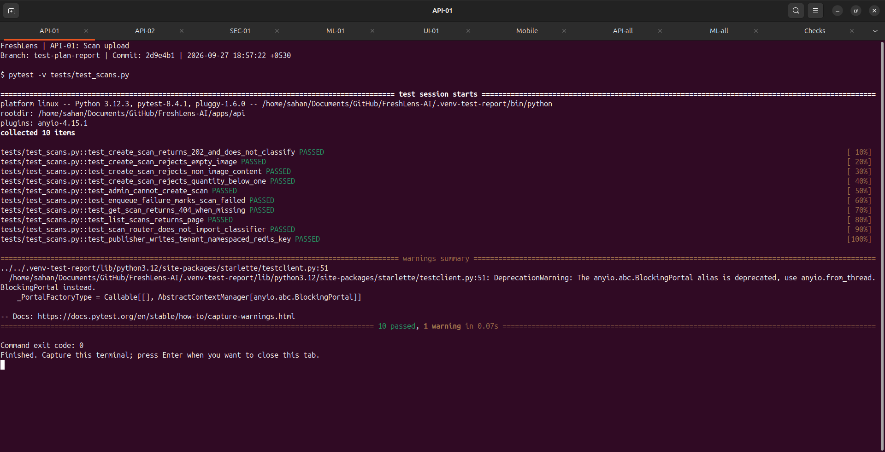
E01. 10 passed; multipart input validation, asynchronous acceptance and tenant-namespaced publishing. Component tests use substituted dependencies.
Source: Screenshot from 2026-09-27 18-58-00.png · User-captured terminal screenshot
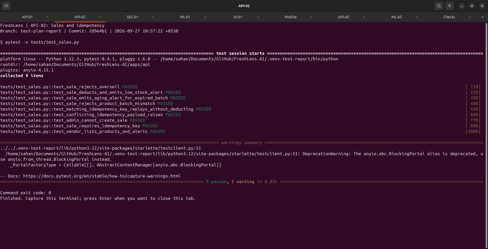
E02. 9 passed; stock rules and sequential idempotency checks with a fake database. Live concurrency is covered separately by INT-01.
Source: Screenshot from 2026-09-27 18-58-05.png · User-captured terminal screenshot
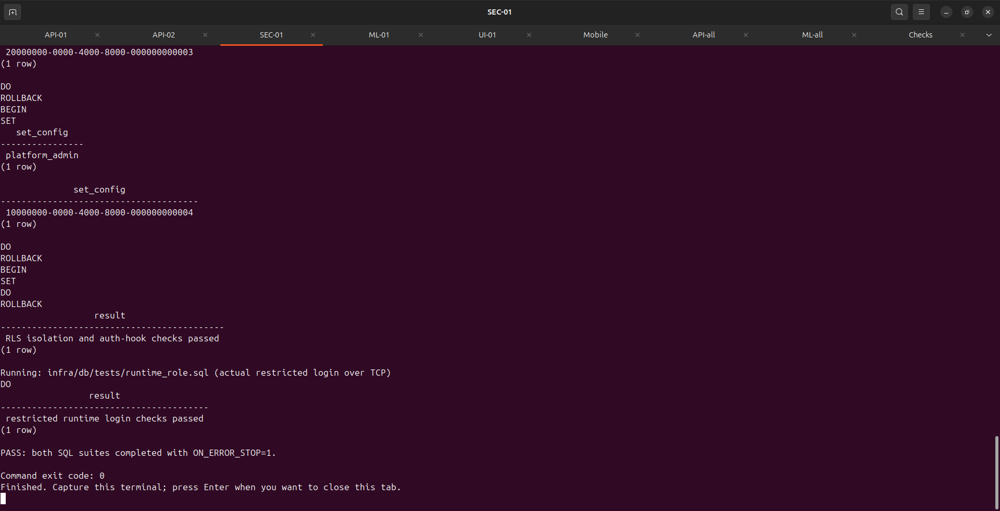
E03. Both SQL suites passed with ON_ERROR_STOP=1; the final command exit code is 0.
Source: Screenshot from 2026-09-27 18-58-10.png · User-captured terminal screenshot
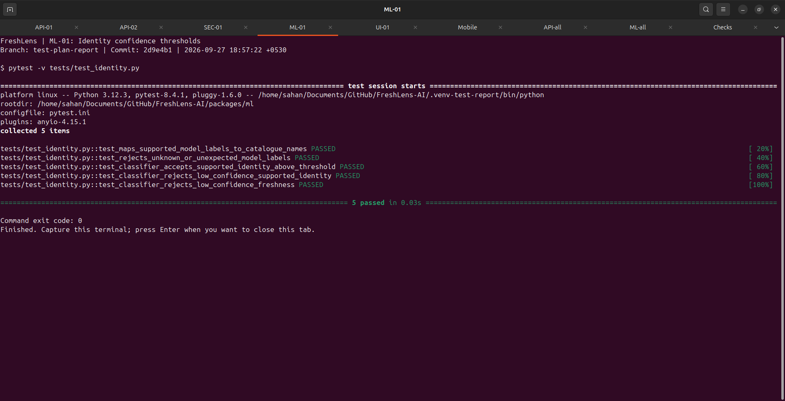
E04. 5 passed using controlled model predictions. This verifies decision logic, not trained-model accuracy.
Source: Screenshot from 2026-09-27 18-58-13.png · User-captured terminal screenshot
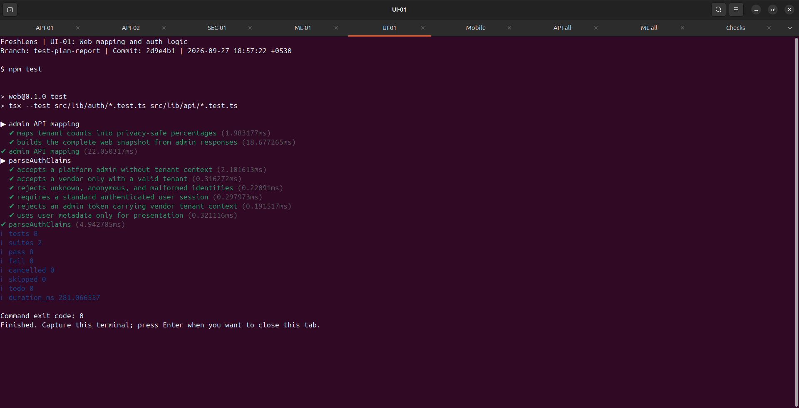
E05. 8 passed using node:test through tsx. These tests cover mappings and authentication claims; browser UI testing is recorded as UI-02.
Source: Screenshot from 2026-09-27 18-58-20.png · User-captured terminal screenshot
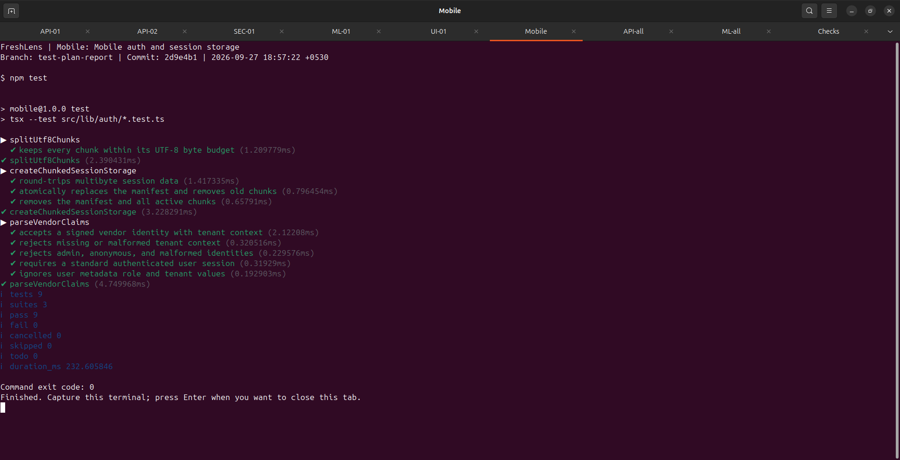
E06. 9 passed; signed-claim validation and chunked storage logic. This is not phone-device UI automation.
Source: Screenshot from 2026-09-27 18-58-27.png · User-captured terminal screenshot
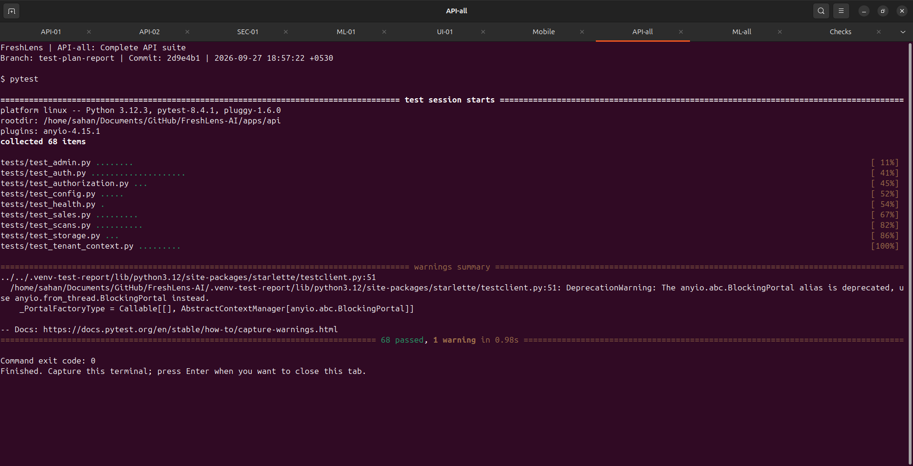
E07. 68 passed, with one third-party Starlette/AnyIO deprecation warning; exit code 0. API-01 and API-02 are subsets of this total.
Source: Screenshot from 2026-09-27 18-58-30.png · User-captured terminal screenshot
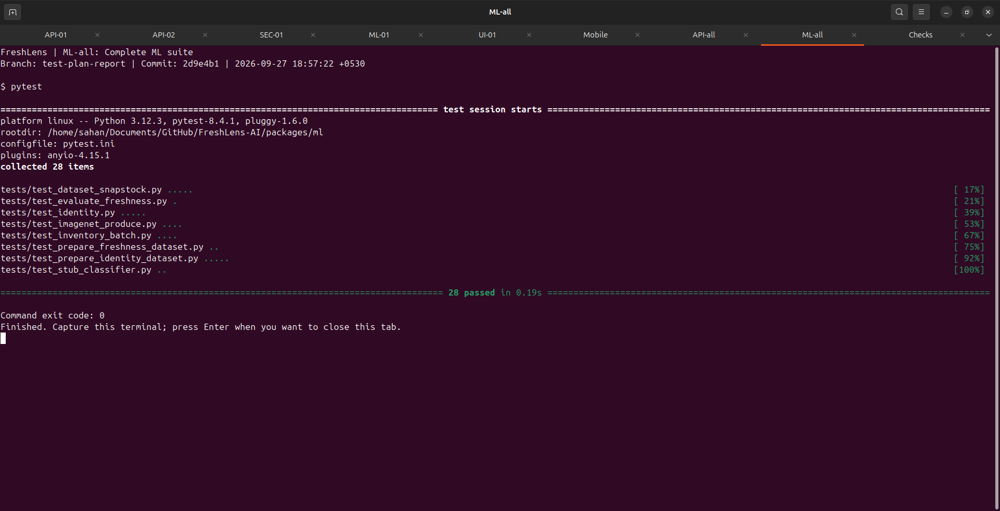
E08. 28 passed; dataset preparation, confidence logic and inventory/stub utilities. ML-01 is a subset of this total.
Source: Screenshot from 2026-09-27 18-58-33.png · User-captured terminal screenshot
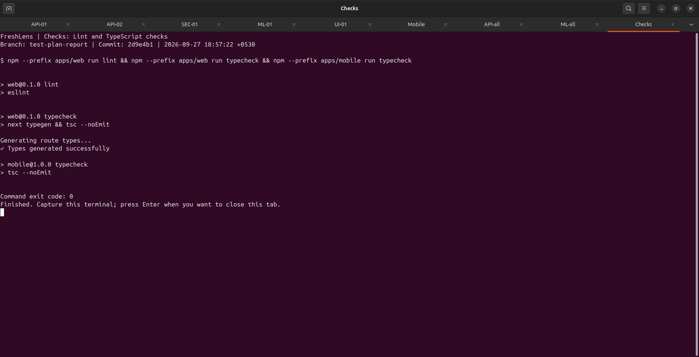
E09. Web ESLint, web typecheck and mobile typecheck completed successfully; exit code 0. These are static checks rather than runtime tests.
Source: Screenshot from 2026-09-27 18-58-38.png · User-captured terminal screenshot
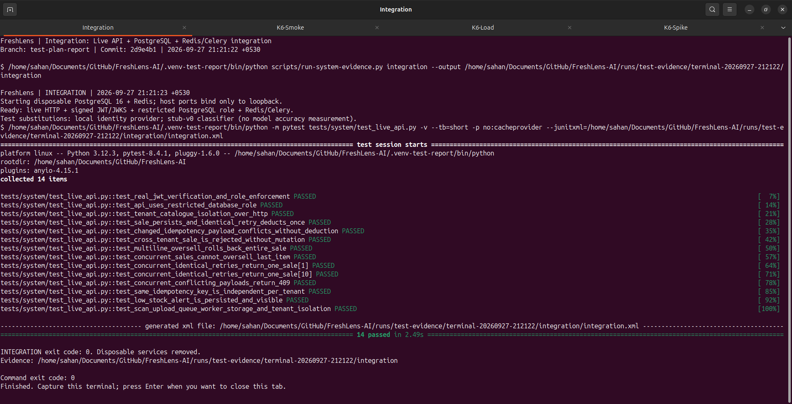
E10. 14 passed in 2.49 seconds. Real HTTP, PostgreSQL, Redis and Celery; local JWKS issuer and stub-v0 classifier. Includes the sales concurrency fix.
Source: Screenshot from 2026-09-27 21-35-40.png · User-captured terminal screenshot
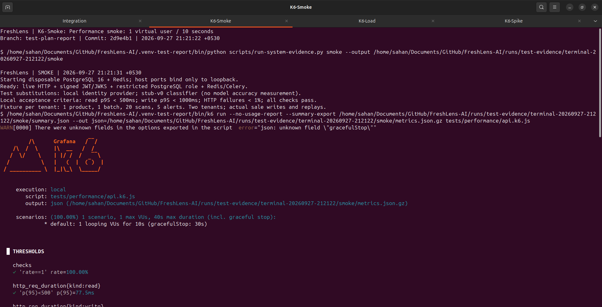
E11. 1 virtual user for 10 seconds; local fixtures and thresholds shown. The gracefulStop warning caused the default 30-second grace period to apply.
Source: Screenshot from 2026-09-27 21-35-52.png · User-captured terminal screenshot
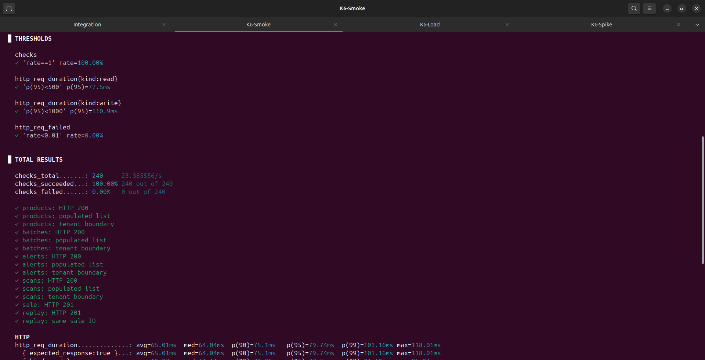
E12. All four thresholds passed; 240 of 240 functional checks passed.
Source: Screenshot from 2026-09-27 21-35-57.png · User-captured terminal screenshot
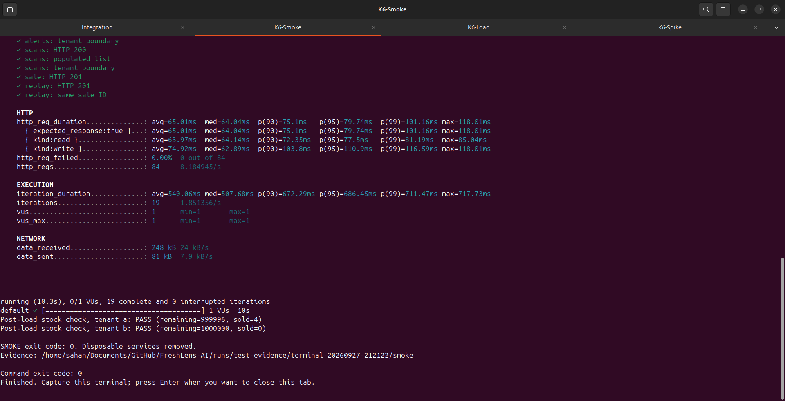
E13. 84 HTTP requests; read p95 77.50 ms, write p95 110.91 ms; 0% HTTP failures; both stock checks passed; exit 0.
Source: Screenshot from 2026-09-27 21-36-02.png · User-captured terminal screenshot
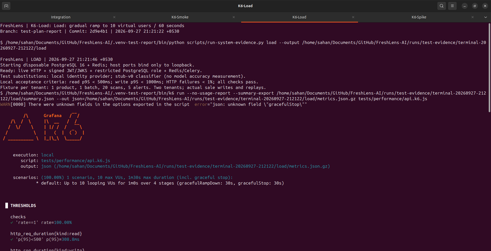
E14. Gradual ramp to 10 virtual users over a 60-second profile; same populated fixtures and thresholds as smoke and spike.
Source: Screenshot from 2026-09-27 21-38-33.png · User-captured terminal screenshot
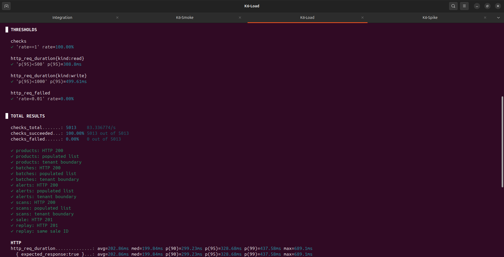
E15. All four thresholds passed; 5,013 of 5,013 functional checks passed.
Source: Screenshot from 2026-09-27 21-38-39.png · User-captured terminal screenshot
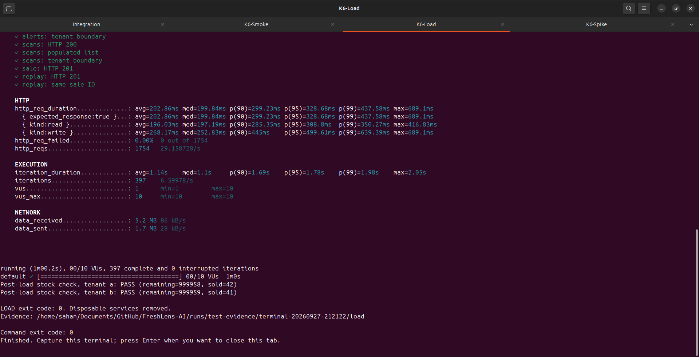
E16. 1,754 HTTP requests; read p95 308.80 ms, write p95 499.62 ms (rounded from JSON); 0% HTTP failures; stock checks passed; exit 0.
Source: Screenshot from 2026-09-27 21-38-41.png · User-captured terminal screenshot
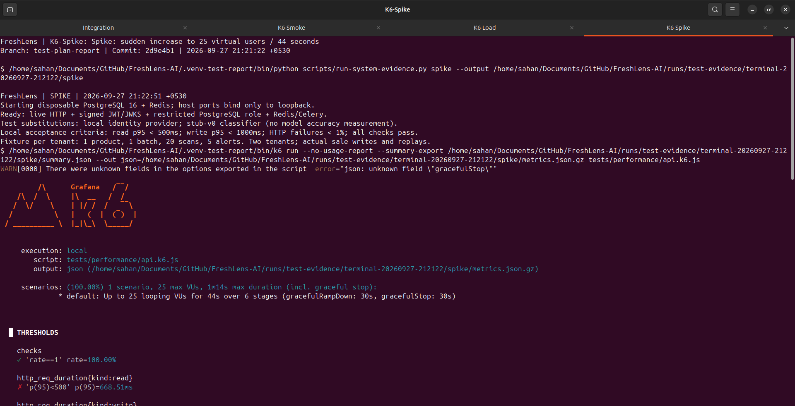
E17. Short spike to 25 virtual users over a 44-second profile; setup, actual grace period and acceptance thresholds shown.
Source: Screenshot from 2026-09-27 21-38-46.png · User-captured terminal screenshot
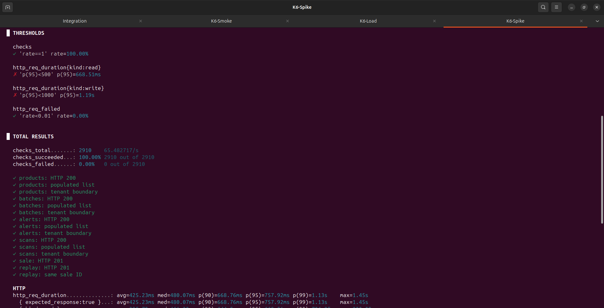
E18. Read p95 668.52 ms exceeds 500 ms; write p95 1,192.94 ms exceeds 1,000 ms. All 2,910 functional checks passed, but the performance verdict is FAIL.
Source: Screenshot from 2026-09-27 21-38-50.png · User-captured terminal screenshot
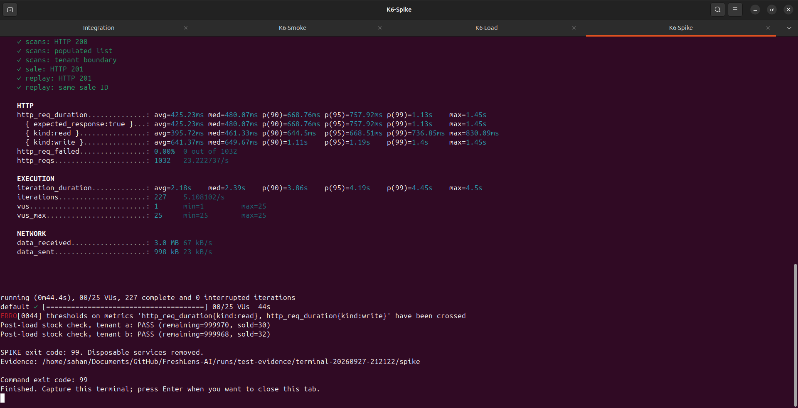
E19. 1,032 HTTP requests; 0% HTTP failures; stock checks passed for both tenants. Exit code 99 records the two failed latency thresholds.
Source: Screenshot from 2026-09-27 21-38-53.png · User-captured terminal screenshot
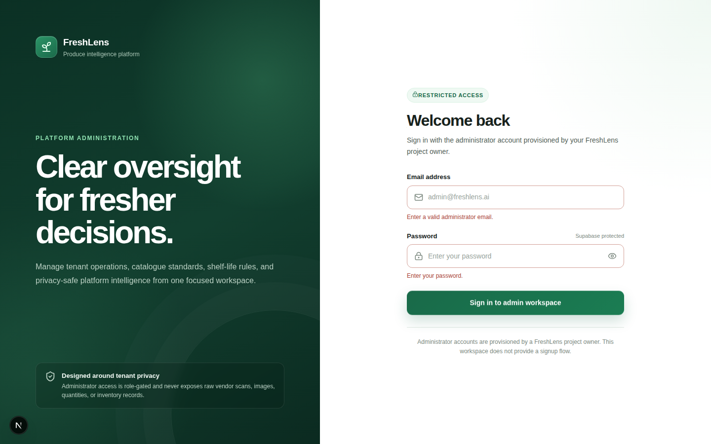
E20. Actual Next.js sign-in page after Playwright submitted an empty form. Both validation messages and invalid-field states were asserted at 1440 x 900.
Source: test_empty_submission_shows_field_errors.png · Playwright browser screenshot, 27 September 2026
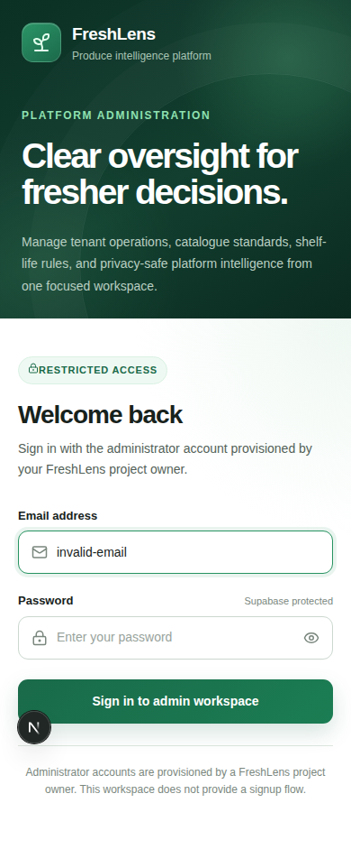
E21. Actual browser capture at a 390 x 844 viewport (full page). Playwright verified the submit control was visible and inside the viewport width, with no horizontal overflow. This is browser viewport testing, not native mobile testing.
Source: test_mobile_width_login_has_no_horizontal_overflow.png · Playwright browser screenshot, 27 September 2026